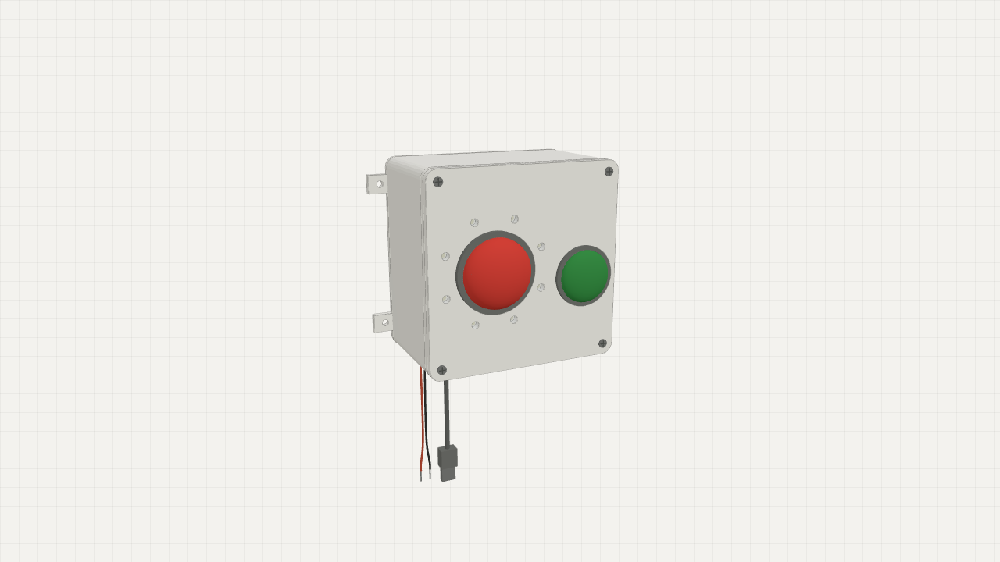
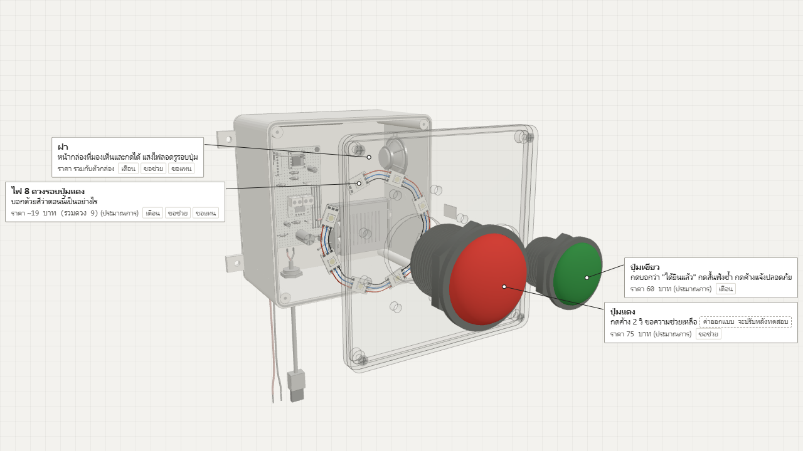
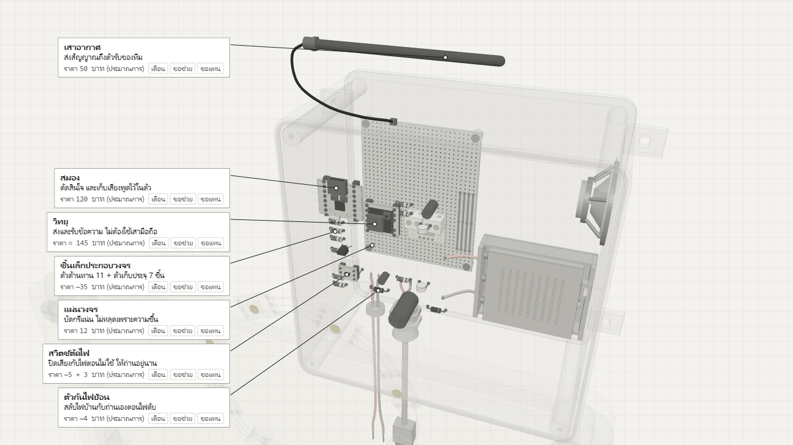
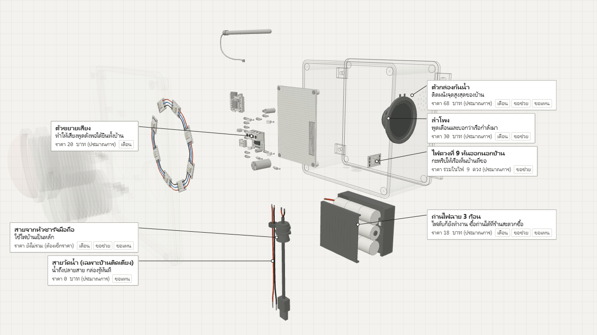
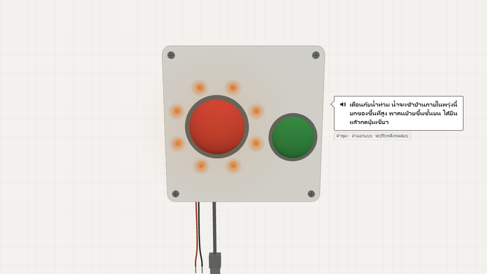
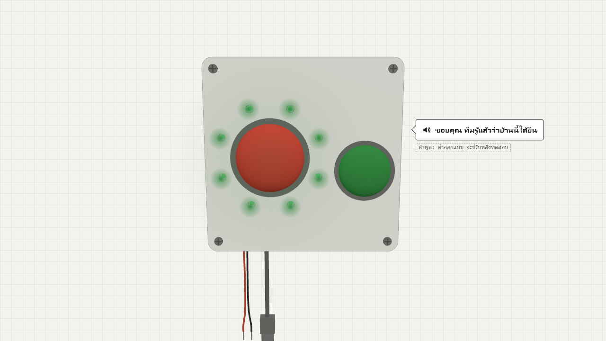
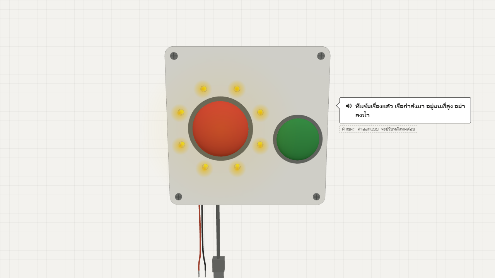
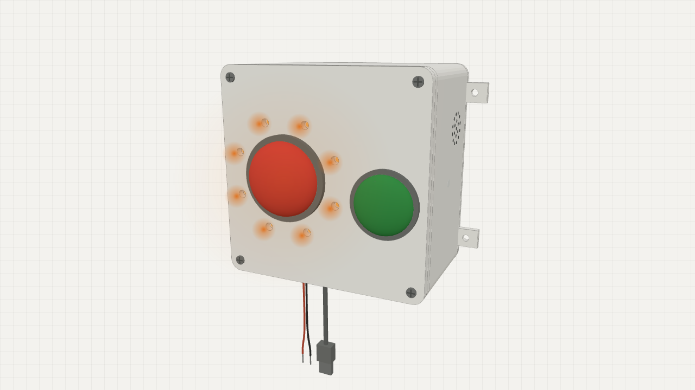
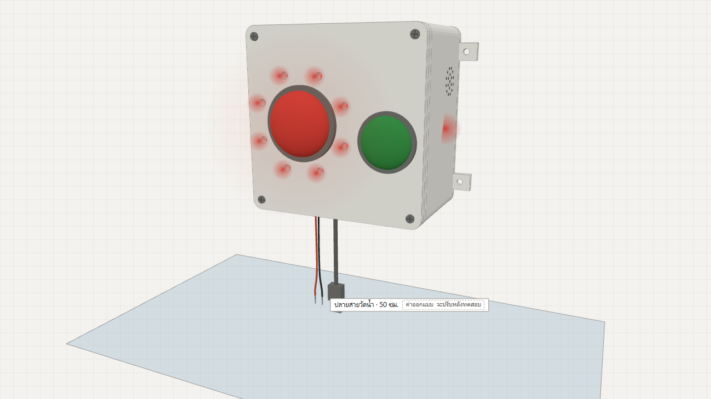
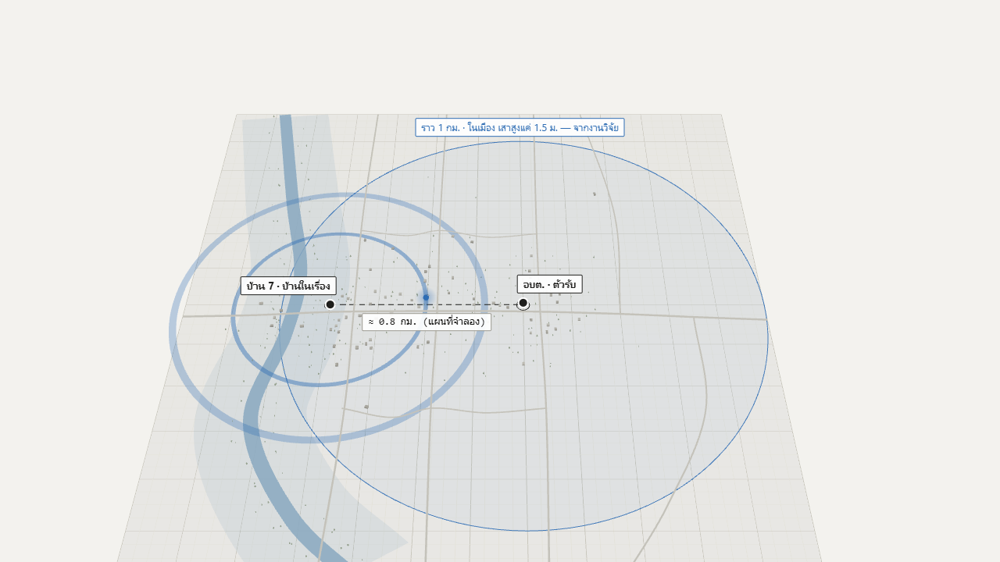

น้ำท่วมทีไร คำเตือนวิ่งทางเดียว ไม่มีใครรู้ว่าใครไม่ได้ยิน
ข้อความเตือนเข้ามือถือหลายรอบ แต่คนไม่รู้หรือรู้ช้า · คำขอซ้ำ · ผู้สูงอายุไม่มีมือถือหายจากแผนที่ ที่มา: กรุงเทพธุรกิจ

ก่อนน้ำมาถามว่า "ได้ยินไหม" พอน้ำมาตอบว่า "ได้ยินแล้ว กำลังไป"
กล่องติดบ้าน คุยกับทีมช่วยเหลือได้สองทาง สำหรับผู้สูงอายุที่ไม่มีสมาร์ตโฟน

สองปุ่มกับไฟรอบปุ่มแดง คือทั้งหมดที่คนในบ้านต้องรู้

สมองกับวิทยุคุยกับทีมช่วยเหลือ ไม่ต้องใช้มือถือหรือเน็ต

พูดเตือนดัง ๆ ไฟดับก็ใช้ถ่าน สายห้อยรู้ว่าน้ำมาถึง
รวม ≈ 657 บาท (ประมาณการ)
ราคาต่อชิ้นรวมกล่อง 68 บาทและไดโอด ผลบวกจึงอาจต่างจากยอดรวมเล็กน้อย
กลุ่ม 1/6 ไฟเลี้ยง
ใช้ไฟบ้านเป็นหลัก ไฟดับก็สลับไปใช้ถ่านเอง
สวิตช์ตัดไฟปิดเสียงกับไฟตอนไม่ใช้ ถ่านจึงอยู่ได้ ≥ 7 วันตอนไฟดับ ค่าออกแบบ จะปรับหลังทดสอบ
กลุ่ม 2/6 วิทยุ
สมองคุยกับวิทยุ วิทยุส่งข้อความออกทางเสา
กลุ่ม 3/6 ปุ่ม + สายวัดน้ำ
ปุ่มสองปุ่มและสายวัดน้ำ ต่อเข้าสมองโดยตรง
ปุ่มเขียวมีสายของตัวเอง น้ำจึงทำให้กลายเป็น "ปลอดภัย" เองไม่ได้
กลุ่ม 4/6 ไฟสถานะ
สมองสั่งสีไฟแปดดวงด้วยสายเส้นเดียว
กลุ่ม 5/6 เสียง
สมองส่งเสียงพูด ตัวขยายทำให้ลำโพงดัง
กลุ่ม 6/6 ไฟกะพริบ
ดวงที่เก้าใช้สายเดิม หันออกนอกบ้านให้เรือเห็น

สีเดียว ความหมายเดียว
พูดซ้ำทุก 10 นาทีจนกว่าจะกด ค่าออกแบบ จะปรับหลังทดสอบ

สีเดียว ความหมายเดียว
สีเดียว ความหมายเดียว


เรื่องสมมติ
ยายสมศรี อายุ 78 อยู่บ้านคนเดียวตอนกลางวัน ไม่มีสมาร์ตโฟน
1/3 เตือน
กล่องเตือนแล้ว ยายไม่ได้ยิน ทีมจึงรู้ว่าบ้านนี้ยังเงียบ
ไม่กดใน 6 ชม. = บ้านเงียบ ค่าออกแบบ จะปรับหลังทดสอบ → อสม. มาเคาะประตูก่อนน้ำมา
เรื่องสมมติ
ยายสมศรี อายุ 78 อยู่บ้านคนเดียวตอนกลางวัน ไม่มีสมาร์ตโฟน
2/3 ขอช่วย
น้ำเข้าบ้าน ยายกดแดง ไฟเหลืองบอกว่าเรือกำลังมา
กดค้าง 2 วิ ค่าออกแบบ จะปรับหลังทดสอบ · ยายรู้ว่าต้องรอ ไม่ต้องลุยน้ำเอง · 1 บ้าน = 1 คำขอ

เรื่องสมมติ
บ้านที่ลงทะเบียนว่ามีผู้ติดเตียง
3/3 ขอแทน
บ้านผู้ติดเตียงกดเองไม่ได้ กล่องขอความช่วยเหลือให้
น้ำถึงสาย 50 ซม. + ไม่มีใครตอบ 2 ชม. ค่าออกแบบ จะปรับหลังทดสอบ → ขึ้นลำดับแรก อสม. ยืนยันก่อนส่งเรือ
ของเดิมส่งทางเดียวหรือต้องมีมือถือ กล่องนี้คุยสองทาง
| ของเดิม | ยังขาด | กล่องนี้ |
|---|---|---|
| ข้อความเตือนเข้ามือถือ (Cell Broadcast) / หอกระจายข่าว ที่มา | ส่งได้ทางเดียว | มีการยืนยันกลับ รู้ว่าบ้านไหนยังไม่ได้ยิน |
| วิทยุรับข่าวภัยในบ้าน (ญี่ปุ่น) ที่มา | เคยมีสองทาง แต่ถูกเสนอตัดเพราะแพง | สองทางในราคา ≈ 657 บาท (ประมาณการ) |
| FMAS (มาเลเซีย) ที่มา | ไม่ได้บอกว่าคนขอได้อะไรกลับ | ไฟบอกสถานะ · 1 บ้าน 1 คำขอ · ขอแทน |
| Traffy Fondue และแอปตอนหาดใหญ่ | ต้องใช้เน็ตและสมาร์ตโฟน | ไม่ต้องใช้ทั้งสองอย่าง |
กล่องไม่ได้มาแทน อสม. แต่บอกว่าควรไปเคาะบ้านไหนก่อน
ของจริงทดสอบกับผู้สูงอายุ วันที่ 25 ต.ค.
ยังต้องลองของจริง: ไฟดวงที่ 9 สว่างพอให้เรือเห็นตอนกลางคืนไหม · เสียงได้ยินจากห้องอื่นไหม
ลองกดเองได้เลย แล้วไปดูหน้าจอทีมช่วยเหลือ
ปลายสายวัดน้ำแขวนที่ 50 ซม. ค่าออกแบบ จะปรับหลังทดสอบ

จอทีมช่วยเหลือ (จำลอง)
จอของตัวรับ Serial
ข้อความจริงทางสาย USB เป็น JSON ตาม data-contract ข้อ 5